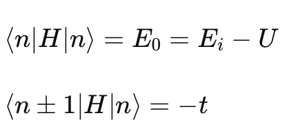
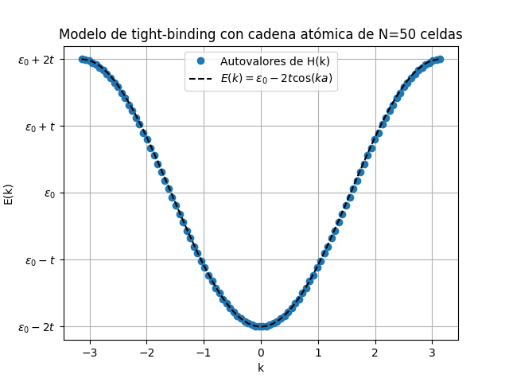

Modelo de Tight Binding en una Cadena Monoatómica
Este repositorio contiene el código y la documentación relacionados con el modelado del "tight binding" en una cadena monoatómica con un orbital por átomo. Este proyecto es parte de un trabajo universitario coordinado por Marlon Brenes y Federico Muñoz.
Descripción del Proyecto
El modelo de tight binding (o enlace fuerte) se utiliza para describir la estructura de bandas electrónicas en sólidos cristalinos. En este proyecto, consideramos una cadena atómica infinita con un orbital atómico por átomo.
Conceptos Clave
- Parámetro de red : a : La distancia entre celdas unidad.
- Parámetro de hopping : t : La probabilidad de que un electrón salte de un orbital a su vecino.
- Combinación de orbitales atómicos : Se utiliza la combinación lineal de orbitales atómicos para describir el estado del sistema.
Ecuaciones Fundamentales
El modelo se basa en las siguientes ecuaciones:

Donde N es el total de sitios y k es un número real en el espacio recíproco.
La matriz hamiltoniana dependiente del parámetro k se diagonaliza para obtener la energía del sistema:

Objetivos y Metas
- Construir la matriz hamiltoniana dependiente del parámetro (k).
- Diagonalizar la matriz hamiltoniana para obtener la energía del sistema.
- Utilizar la función de autovalores para optimizar la diagonalización de la matriz.
- Implementar el algoritmo en Python.
Contenido del Repositorio
tight_binding.py: Código fuente en Python para la construcción y diagonalización de la matriz hamiltoniana.tight_binding.png: Gráfico de la estructura de bandas generado a partir del modelo.
Uso
Para ejecutar el código, asegúrate de tener Python instalado en tu sistema y las bibliotecas necesarias. Puedes correr el script de la siguiente manera:
python tight_binding.py
Resultado
La curva parabólica invertida refleja la relación de dispersión típica de un modelo de tight binding para una cadena monoatómica con un orbital por átomo.
La gráfica muestra una banda de energía que es consistente con la relación de dispersión E(k) = E0 − 2tcos(ka).

Revisión Final
- La gráfica tiene la forma parabólica invertida esperada.
- Verifica si el rango de energías corresponde a −2t y 0, ya que E0 está ajustado a 0.
- Los valores de k están correctamente en el rango −π/a a π/a.
- Para asegurar que la implementación sea completamente correcta, verifica que:
- El parámetro t es positivo.
- a es la constante de red.
- E0 está correctamente ajustado a 0.